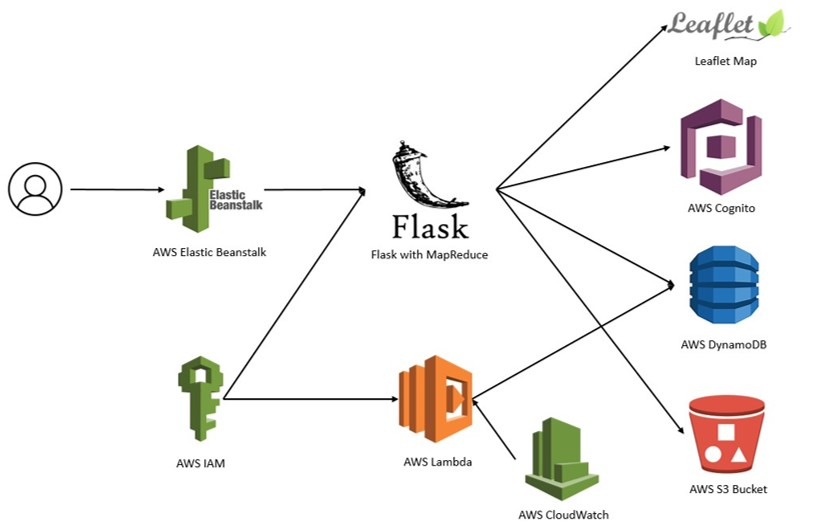
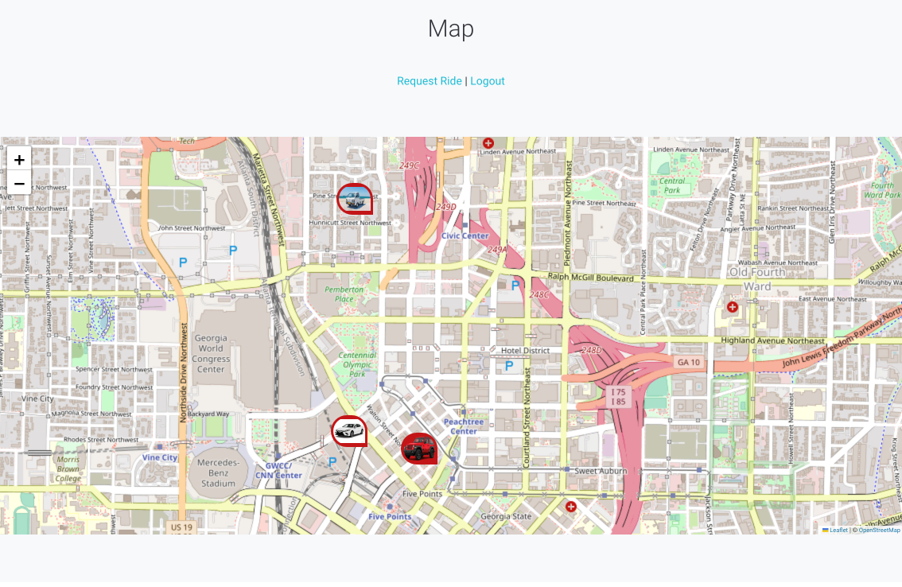
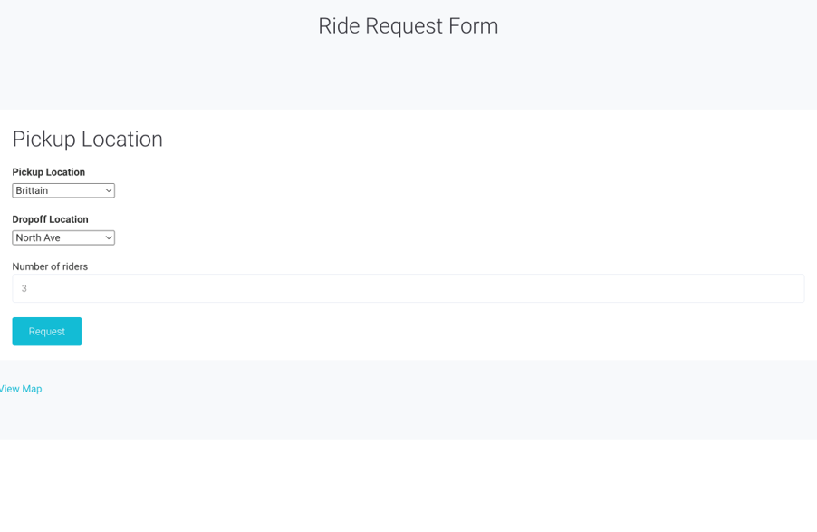
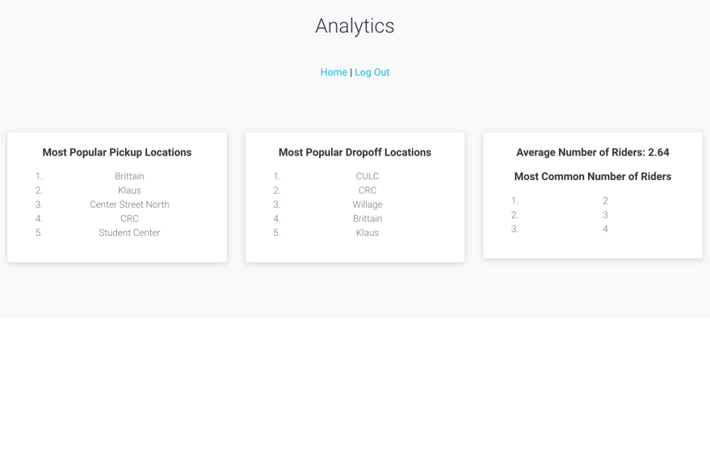

Who and When
I built this on a team of four for my ECE 4150 Cloud Computing Final Report in Fall 2022 over the course of three weeks.
What
My team built a rideshare website using a variety of AWS services, highlighted in the diagram below.

- Elastic Beanstalk hosted our Flask application.
- AWS IAM and Cognito were used for login purposes.
- DynamoDB that stored data that users submitted, including rides and taxi info.
- A CloudWatch rule called a Lambda function every minute which "moved" the taxis' locations in our Dynamo DB to simulate movement.
This website allowed users to sign up either as a driver or a rider. If you sign up as a driver, you then register your vehicle by filling out information and uploading a picture of the car. After that, you would then be directed to a page with the open requests.
If you signed up as a rider, you could then see where all of the current drivers are. The drivers' vehicles were randomly located around Georgia Tech. As a rider, you can request a ride and if any taxi is available, you get the taxi that is the closest one to you
I mainly worked on the rider functionality, including the ride request form in which after being submitted would be uploaded to the DynamoDB. A function would also search for available taxis, and among those found, would pair the closest one to the ride, and would display the driver and car's info to the user.
Gallery


